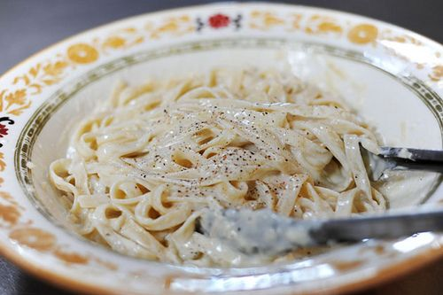

Worlds Best Fettuccine Alfredo

How to Make Fettuccine Alfredo
This pasta recipe is the real deal!
Parmesan, butter, heavy cream, and pasta mixed right at the table, perfect for a family dinner or entertaining a crowd.
Fettuccine Alfredo Ingredients
- 1 pound fettuccine noodles
- 1 stick butter
- 1 cup heavy cream
- Salt and pepper, to taste
- 2 cups freshly grated parmesan cheese
Directions
- Gather all your ingredients.
- Cook the pasta according to package directions.
- Warm the butter and cream in a saucepan or skillet.
Season with salt and freshly ground black pepper.
- Grate the parmesan cheese and place half of it into a large serving bowl.
Pour the warm butter/cream mixture over the top.
- Drain the pasta and immediately pour it into the bowl.
Toss a couple of times, then sprinkle in the other half of the parmesan.
Toss to combine, thinning with pasta water if necessary.
- Drain the pasta and immediately pour it into the bowl.
Toss a couple of times, then sprinkle in the other half of the parmesan.
Toss to combine, thinning with pasta water if necessary.